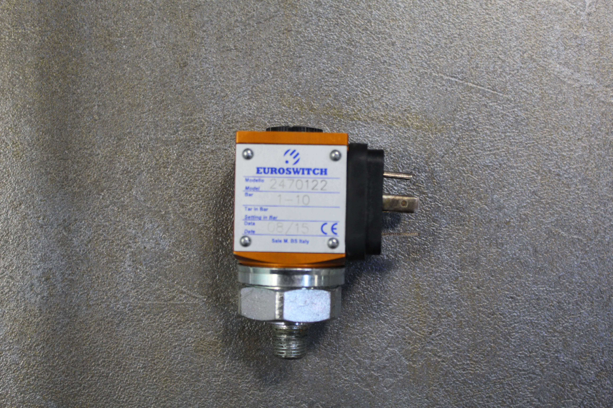

Before proceeding, carefully read the | |
DescriptionNo saw blade water input signal | SeverityMedium03 / 05 |
Authorized personnelMachine operator | Required PPE:  |
Description
This alarm is associated with the absence of the saw blade water pressure switch input signal during an automatic cycle.
The pressure switches are located in this position and are of two types:



Symptoms
…..
Possible causes
There are several possibilities:
Actual absence of water;
Pressure switch set to an excessively high water pressure;
Faulty pressure switch;
Fault in the connections between the pressure switch and the electrical cabinet.
Possible solutions
Check the reason for the lack of water; it may simply be a pressure drop.
Set the pressure switch to the required pressure. To adjust the pressure switches, follow the adjustment procedure for the relevant pressure switch type: EUROSWITCH or IFS (IFS data sheet);
Replace the pressure switch, preferably with one of the same type;
Check the pressure switch connection circuit by following the